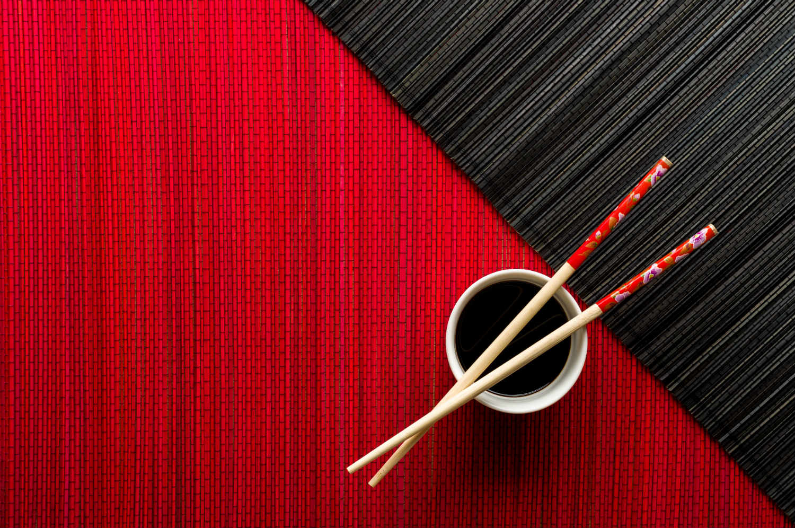

ẨM THỰC VIỆT NAM: TINH HOA CÁC MÓN NGON VIỆT NAM ĐẶC SẮC & HẤP DẪN NHẤT

Ẩm thực Việt Nam luôn ẩn chứa nhiều điều thú vị. Ảnh: Internet
Có lịch sử lâu đời và vị trí địa lý khác biệt nên mỗi vùng miền trên lãnh thổ hình chữ S luôn có những món ăn mang hương vị riêng, không thể hòa lẫn. Từ đó góp phần tạo nên nền ẩm thực Việt Nam đa sắc, thu hút mọi thực khách trong và ngoài nước.
Ẩm Thực Việt Nam Là Gì

Đặc điểm của nền ẩm thực Việt Nam
1. Nguyên tắc phối hợp
Cách pha trộn nguyên liệu trong ẨM THỰC VIỆT NAM thường không quá cay, quá ngọt hay quá béo. Ngoài đường, muối thì các nguyên liệu phụ (gia vị) để chế biến món ăn cũng rất phong phú và đa dạng, có thể kể đến:
- Các loại rau thơm như húng quế, tía tô, hành lá, kinh giới, mùi tàu,…
- Gia vị thực vật như ớt, tiêu, sả, hẹ, gừng, chanh,…
- Gia vị lên men như mẻ, mắm tôm, giấm bỗng,…
Khi thưởng thức món ăn, nguyên tắc phối hợp nguyên liệu còn được thể hiện rõ nét hơn: Người Việt ít khi thưởng thức từng món ăn một cách riêng biệt. Thay vào đó là sự hòa trộn các món ăn từ đầu đến cuối trong cùng một bữa. Theo đó, thức ăn sẽ được xúc ra tô, đĩa và bày trong mâm tròn, bên cạnh luôn có chén nước chấm để giúp khẩu vị đậm đà hơn.
Một nét đặc trưng, đặc biệt khác ở ẩm Thực Việt Nam mà hầu hết các nước phương Tây không có đó chính là nước mắm – gia vị được sử dụng thường xuyên khi chế biến các món ăn của người Việt. Ngoài ra còn có các loại nước chấm khác như tương bần, xì dầu (làm từ đậu nành) mang đến hương vị cuốn hút cho từng món ăn.
Nước mắm là gia vị không thể thiếu khi chế biến và thưởng thức món ăn của người Việt. Ảnh: Internet
2. Nguyên lý chế biến
Có 2 nguyên lý chế biến trong ẨM THỰC VIỆT NAM, đó là: âm dương phối triển và ngũ hành tương sinh
- Âm dương phối triển
- Ngũ hành tương sinh
Các gia vị, nguyên liệu được kết hợp theo nhiều nguyên tắc để tạo nên món ăn vừa ngon, vừa lành tính. Ảnh: Internet
Nét đặc trưng trong ẩm thực của người Việt
Tính hòa đồng hay đa dạng
Điểm nổi bật của ẩm thực nước ta từ Bắc chí Nam đó là tính cách dễ dàng tiếp thu văn hóa, đặc biệt là văn hóa ẩm thực của các dân tộc khác trên lãnh thổ Việt, từ đó cải biên để phù hợp với khẩu vị chung và trở nên phổ biến.
Đậm đà hương vị
Nước mắm là gia vị đặc trưng thường được người Việt nêm vào món ăn cùng nhiều phụ gia khác khi chế biến, tạo nên hương vị đậm đà khó cưỡng. Ngoài ra, mỗi món ăn khác nhau còn đi kèm với loại nước chấm phù hợp.
Đũa
Tương tự như một số quốc gia châu Á khác, việc dùng đũa khi thưởng thức món ăn cũng là nét đặc trưng trong văn hóa ẩm thực của người Việt. Đôi đũa luôn có mặt trong mọi bữa cơm, người Việt ít khi dùng nĩa để xiên thức ăn như người phương Tây. Theo đó, việc cầm và gắp đũa sao cho khéo và không bị rớt đồ ăn cũng là một nghệ thuật.
Việc dùng đũa chính là một nghệ thuật. Ảnh: Internet
Hy vọng với những chia sẻ của mình, bạn sẽ hiểu hơn về văn hóa ẩm thực Việt Nam.